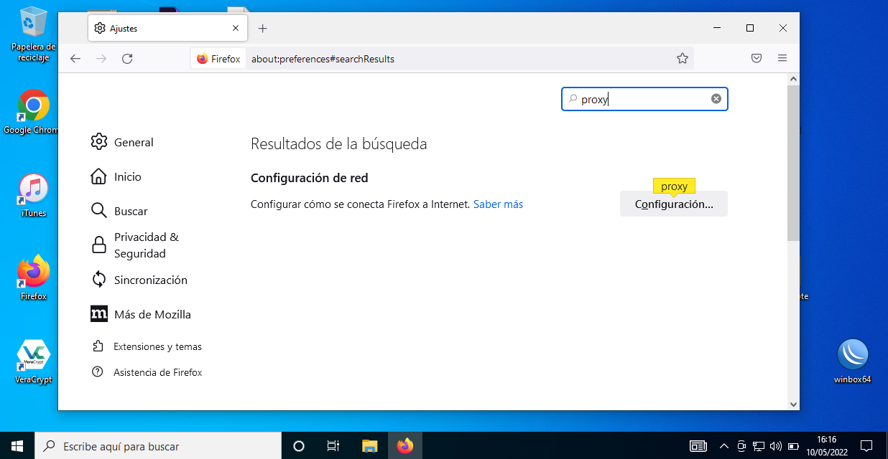
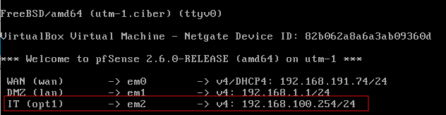
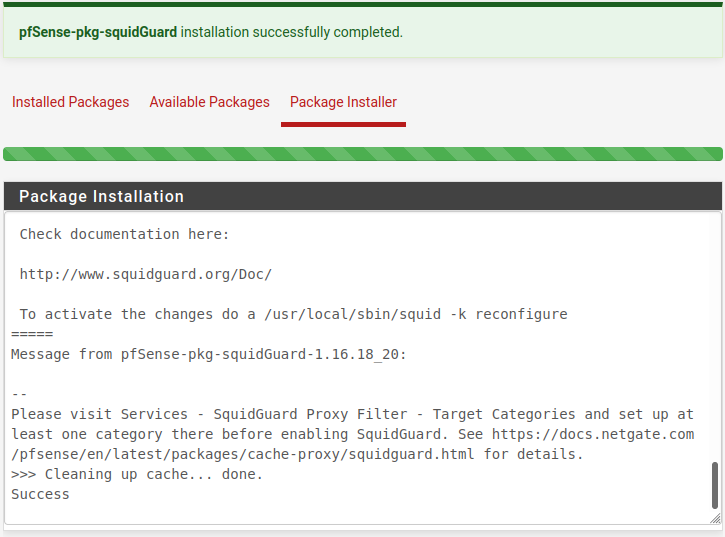
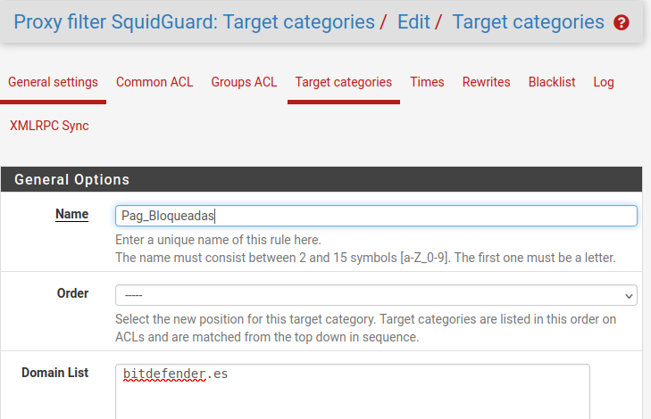
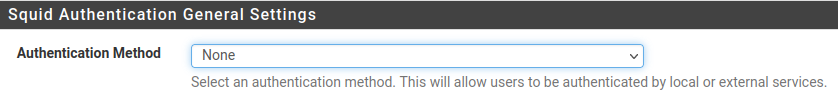
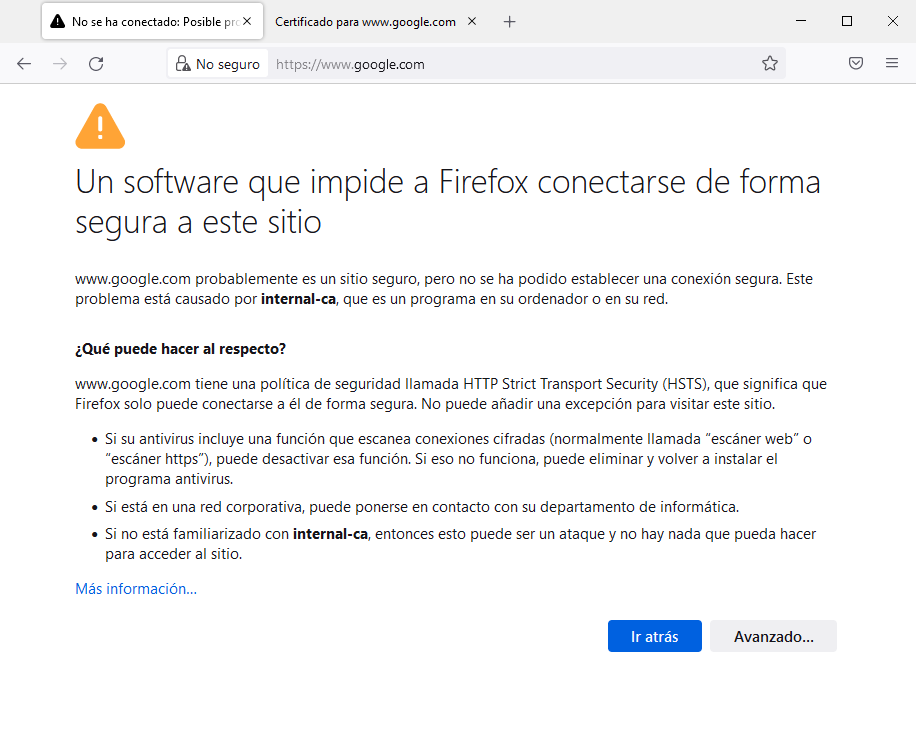

6. Caso Práctico. Implementación de Proxy Squid en Pfsense
1. Introducción
Squid es un servidor proxy para web con caché. Es una de las aplicaciones más populares y de referencia para esta función, es un desarrollo en software libre publicado bajo licencia GPL. Entre sus utilidades está la de mejorar el rendimiento de las conexiones de empresas y particulares a Internet guardando en caché peticiones recurrentes a servidores web y DNS, acelerar el acceso a un servidor web determinado o añadir seguridad realizando filtrados de tráfico. [Wikipedia]
En este apartado se describe el proceso de cómo configurar un proxy squid dentro del firewall Pfsense partiendo del equipo que se configuró en la unidad de trabajo anterior. El servidor proxy se configurará en la red IT. El esquema de red que se tiene es el siguiente:
Figura 1. Esquema de red de la organización.
2. Requisitos
- Máquina Virtual PfSense creada en la unidad de trabajo 'Fortificación perimetral: DMZ y cortafuegos'
- Máquinas virtuales de los distintos equipos de la red de tu proyecto según el esquema de la figura 1.
2. Instalación
Para implementar un proxy Squid en Pfsense hay que instalar el servicio desde System > Package Manager > Available Packages. Una vez ahí buscamos squid.
1. Paquetes squid
Una vez se accede a la ventana de paquetes, se escribe squid en la caja de búsqueda y se pulsa 'Search'. Como se puede ver en la figura inferior, la consulta devuelve los paquetes squid disponibles.
2. Instalar squid
A continuación, se pulsa 'Install' sobre el paquete squid cuya versión a fecha 10 de mayo de 2022 es la 0.4.45_8. Aparece una nueva pantalla donde hay que pulsar en 'Confirm' para que comience el proceso de instalación (figura derecha). Una vez finaliza el proceso, si todo ha ido bien, aparece el siguiente mensaje: pfSense-pkg-squid installation successfully completed.
3. Configuración
Una vez instalado el paquete squid, ya se puede comenzar la configuración desde Services > Squid Proxy Server .
3.1. Caché Local
En primer lugar hay que configurar la caché local y para ello, hay que acceder a la pestaña 'Local Cache', donde hay que observar si el dimensionamiento de la caché en disco y memoria es el adecuado en el contexto de la infraestructura de la red/equipos. Para este caso, se realizan los siguientes cambios:
Sección Squid Hard Disk Cache Settings
- Hard Disk Cache Size: 500 (se cambia los 100 Mbytes iniciales por 500 Mbytes).
El resto de parámetros se dejan con su valor por defecto, donde:
- Hard Disk Cache System: ufs (Sistema de archivos que usará).
- Hard Disk Cache Location: /var/squid/cache (ubicación donde almacenará la caché).
- Level 1 Directories: 16 directorios de primer nivel que creará.
Sección Memory Cache Settings. Para el caso de la caché de la RAM, dependerá del tamaño de la RAM del Pfsense y del número de equipos que navegarán con el proxy para la modificación del parámetro Memory Cache Size. Nota: No se tendría que configurar más del 50% de la memoria RAM.
- Memory Cache Size: 128 (se cambia el valor inicial de 64 por el de 128 Mbytes).
El resto de parámetros se dejan con su valor por defecto.
Para guardar los cambios, hay que pulsar el botón .
3.2 Configuración General
Una vez configurada la caché, el siguiente paso es acceder a la pestaña 'General' y activar la primera opción, es decir, activar el proxy Squid. Después, hay que escoger como interfaz del proxy la interfaz IT y en Outgoing se elige la WAN. El puerto se deja el que hay por defecto.
Figura 2. Configuración de Squid Proxy Server - sección General.
Una vez realizado esta primera configuración, hay que pulsar en .
El resto de parámetros se dejan con su valor por defecto, donde:
- Hard Disk Cache System: ufs (Sistema de archivos que usará).
- Hard Disk Cache Location: /var/squid/cache (ubicación donde almacenará la caché).
- Level 1 Directories: 16 directorios de primer nivel que creará.
Sección Memory Cache Settings. Para el caso de la caché de la RAM, dependerá del tamaño de la RAM del Pfsense y del número de equipos que navegarán con el proxy para la modificación del parámetro Memory Cache Size. Nota: No se tendría que configurar mas del 50% de la memoria RAM.
- Memory Cache Size: 128 (se cambia el valor inicial de 64 por el de 128 Mbytes).
El resto de parámetros se dejan con su valor por defecto.
Para guardar los cambios, hay que pulsar el botón .
3.3 Bloqueo de páginas
Para bloquear el acceso a una página web, hay que añadir la misma a la Blacklist, en este caso de ejemplo, se usa el bloqueo de acceso a Marca.es, para ello, hay que acceder a la sección ACLs y añadir la página en el cuadro Blacklist.
Figura 3. Acceso a ACLs.
Como ejemplo, se bloquea el acceso a la página marca.es.
Figura 4. Configurar el bloqueo de páginas.
Una vez se hayan definido la/s página/s en la Blacklis, hay que pulsar en para guardar los cambios.
3.4 Añadir proxy al navegador
El siguiente paso es introducir el proxy en el navegador que se esté utilizando en los equipos de la red IT. Como ejemplo, desde un equipo Windows 10, se configura el proxy en el navegador Firefox. Para ello, hay que acceder a 'Ajustes' y buscar Proxy y pulsar en 'Configuración'.

Figura 5. Acceso a la configuración del proxy.
Una vez se accede a la página de configuración, hay que poner la IP del Pfsense (ip de la red it: 192.168.100.254) y el puerto por defecto del squid (3128). También hay que ponerlo en Host SOCKS.
En la imagen inferior, se adjuntan las interfaces del Pfsense para comprobar la ip de la red it.

Figura 6. Interfaces de PfSense.
Hay que introducir la ip en el cuadro 'Configuración manual del proxy', para este caso, es la 192.168.100.254 y el puerto 3128. Por último, se introduce la ip 192.168.100.254 en el cuadro Hosts SOCKS.
Figura 7. Configurar el proxy manual en Firefox.
3.5 Prueba de bloqueo al acceder a Marca.es
Si se intenta acceder a la página marca.es desde el navegador firefox, se puede observar que se bloquea el acceso a la misma dado que el proxy rechaza la conexión.
Figura 8. Bloqueo de la página marca.es.
4. Autenticación básica
Otra de las funciones de un proxy es el control de quién puede acceder o no a sus servicios. Una de las formas de implementar esta seguridad es mediante el uso de credenciales de acceso (usuario/contraseña). Para implementar el login hay que activar el método de autenticación, de este modo al comenzar a navegar aparecerá una ventana emergente donde habrá que introducir las credenciales para poder acceder a internet.
1. Establecer método autenticación
Hay que acceder a la sección 'Authentication', es decir, a Services > Squid Proxy Server > Authentication. Una vez allí, hay que establecer el método de autenticación a 'Local' y pulsar en 'Save'.
2. Sección users
Desde la sección de Users hay que añadir los perfiles de usuario que podrán autenticarse en el login. Para ello, hay que pulsar sobre el botón . Para este caso de ejemplo, se crea el usuario jcrequena de la red IT. Para continuar, hay que pulsar en 'Save'.
Una vez se añade el usuario, ya aparece en la lista.
3. Prueba de acceso
Una vez guardada la configuración y al comenzar a navegar, saldrá la siguiente ventana emergente donde hay que introducir las credenciales del usuario que se ha configurado en el paso anterior.
5. Squid Guard
Squid Guard es un complemento de Proxy Squid que permite controlar el contenido de los sitios web a los que pueden acceder los usuarios. En los siguientes apartados se describe el proceso de instalación, configuración y prueba del mismo.
5.1 Instalación
Para instalarlo en Pfsense lo primero que hay que hacer es acceder a System > Package Manager. A continuación hay que seleccionar Available Packages y buscar squidguard. Una vez se encuentra hay que pulsar Install.
Figura 9. Instalar paquete squidguard.
Una vez se pulsa Install, aparece la pantalla donde hay que pulsar 'Confirm'.
| Figura 10. Confirmar la instalación. | Figura 11. Proceso de instalación. |
Si el proceso ha ido bien, aparece un mensaje como este: pfSense-pkg-squidGuard installation successfully completed.

Figura 12. Proceso de instalación completado.
5.2 Configuración
Una vez se ha instalado el paquete, se comienza con la configuración del mismo, para ello, hay que acceder a Services > SquidGuard Proxy Filter.
1. General settings
En primer lugar, hay que acceder a la pestaña General settings, y antes de activar el servicio hay que configurar las opciones de loggin desde Logging options. Para ello, hay que activar las 3 casillas y en Blacklist options activar Blacklist. Después, en Blacklist URL hay que pegar el siguiente link: http://dsi.ut-capitole.fr/blacklists/download/blacklists_for_pfsense.tar.gz el cual cargará los ACL personalizados de la web dsi.ut-capitole.fr. Al terminar hay que guardar los cambios a través del botón Save.
Nota: Hay muchas webs con ACL de blacklist públicas algunas pueden encontrarse desde el siguiente enlace:
2. Filtros de bloqueo
A continuación, hay que acceder a Target Categories y pulsar el botón para añadir un filtro. Aquí se crearán los filtros que bloqueen las páginas webs que se deseen en caso de que la Blacklist URL no contenga la web en cuestión. Hay que escribir un nombre para el filtro y en dominio hay que poner la(s) página(s) que se quieren bloquear. También se puede poner una descripción (imagen derecha) y a continuación, hay que activar la última opción de log y pulsar Save.
|  |
{kind=link}
3. Filtros de permisividad
Una vez creado el filtro, se puede crear otro para permitir el acceso a paginas específicas, en este caso se añadirá el dominio edu.gva.es, upv.es y google.es.
4. Resumen filtros
Una vez creado el filtro, aparecen en la lista los dos que se han creado (bloqueo y permisividad).
5. Activar squidguard
A continuación, hay que volver al apartado de General settings para activar la casilla de squidguard y luego pulsar Apply. Si se observa, ha cambiado STOPPED por STARTED (figura derecha), por tanto el servicio se ha iniciado correctamente.
6. Blacklist Download
A continuación hay que acceder al apartado de Blacklist y desde Download descargar el paquete de filtros.
Si se accede al fichero blacklists_for_pfsense.tar.gz, se puede observar que se tienen diferentes temáticas, ejemplo: Bitcoin, si se abre el fichero domains dentro del directorio Bitcoins se ven las páginas que se bloquearán por defecto,
7. Groups ACL
La pestaña Groups ACL permite filtrar contenidos web por departamentos de una empresa. El objetivo de los grupos es filtrar los contenidos HTTP por Grupos ACL y filtrar los contenidos web HTTPS con el Firewall. En este apartado no se realiza ninguna configuración, simplemente se comenta que existe la posibilidad ya sea el filtrado por direción/rango ip, usuario (también pueden ser LDAP si se tiene instalado PF2AD en pfSense para la integración y funcionamiento correcto con LDAP), etcétera. Como ejemplo práctico de los grupos ACL, se podrían configurar una serie de usuarios para que puedan navegar libremente permitiendo todo en un Group ACL.
8. Common ACL
A continuación, desde Common ACL hay que pulsar el botón + y aparecerán todas las categorías de la blacklist, más las que se hayan puesto en Target Categories.
En el recuadro se pueden elegir 3 opciones, whitelist para que ese dominio esté permitido, deny para que esté bloqueado y allow que significa que está permitido siempre que no esté en una ACL. La que se quiera que esté permitida hay que darle a a Whitelist. Para este caso, se permiten las páginas que se han configurado anteriormente dentro del Target Pag_Permitidas.
En la parte inferior de la página anterior, hay una opción que es Default Access [all], para este caso se deja en deny para que bloquee todo. Por otro lado, la opción allow sería para que permitiese todo.
Después, hay que activar la opción del log y pulsar Save para guardar (ver figura siguiente).
9. Pruebas páginas permitidas
Por último, se realiza una batería de pruebas para ver el funcionamiento. Para ello, hay que añadir la IP del Pfsense en la configuración del proxy del navegador con su puerto correspondiente (el predeterminado es el 3128). En caso de no añadir la excepción, lo bloquearía:
Muy importante. Si se hace algún cambio con las blacklist, aparte de guardar los cambios desde Save hay que ir a General settings y activarlos desde Apply.
10. Pruebas páginas no permitidas
Si se accede a cualquier página que está bloqueada en la blacklist o las bloqueadas en la sección Target Categories, aparece un mensaje avisando de que no se ha podido establecer la conexión. En este caso, el dominio bitdefender.es se bloquea en el Target que se creó en el punto '2. Filtros de bloqueo'.
{kind=link}
11. Pruebas páginas no permitidas - 2
Si se accede a cualquier dominio Bitcoin, por ejemplo http://bibox.com/, aparece un mensaje avisando de que no se ha podido conseguir la URL solicitada, por lo que el bloqueo que se ha establecido para Bitcoin, funciona correctamente.
12. Status de los servicios
Por último, se comprueba el estado de los servicios configurados donde se puede observar que están en Ok. Desde aquí se pueden parar, reiniciar, etcétera los servicios.
6. Proxy transparente http/https
6.1 Introducción
Como se ha ido comprobando en anteriores capítulos, la funcionalidad que proporciona un proxy es una herramienta imprescindible de seguridad que tiene por finalidad administrar los accesos de dispositivos, de la red interna, a otras redes y a Internet.
El servicio de proxy web puede ser configurado en formatos diferenciados, uno de ellos llamado proxy transparente. La premisa básica para la implementación del proxy transparente es que el usuario, o dispositivo, no necesite ejecutar ninguna configuración para navegación, siendo estas asignadas a la arquitectura de seguridad.
Generalmente, los proxys utilizan el puerto 3128 y por lo tanto se debe configurar en cada cliente para que pueda acceder a internet a través del mismo. En cambio, en un proxy transparente no es necesario realizar ningún tipo de configuración en el cliente, todo el trafico se redirige al puerto 80/443, por lo tanto, es transparente para el cliente.
6.2 Configuración
El primer paso para la configuración del proxy transparente es acceder al menu: Services > Squid Proxy Server > Authentication, para deshabilitar la autenticación proxy, para ello, hay que modificar el parámetro Authentication Method a none

A continuación, hay que acceder al menu: Services > Squid Proxy Server > Local Cache, donde hay que observar si el dimensionamiento del caché en disco es el adecuado en el contexto de la infraestructura de la red/equipos.
A continuación hay que acceder al menu: Services > Squid Proxy Server > General, sección: Transparent Proxy Settings, donde hay que realizar las siguientes configuraciones:
- Transparent HTTP Proxy: Enable.
- Transparent Proxy Interface(s): Se selecciona la red donde se quiere habilitar el proxy transparente a los equipos de la misma, para esta caso, la red es la IT.
- Bypass Proxy for Private Address Destination (omitir destino de dirección privada de proxy): Hay que seleccionar esta opción, de lo contrario, no estará en línea (probado en una máquina virtual, si no se configura, aparecerá un mensaje de error: no se puede obtener el sitio web (URL) que solicitó).
El siguiente paso es configurar Squid Proxy HTTPS, para ello primero hay que generar un certificado accediendo al menú: System > Cert Manager y pulsando + Add.
A continuación, en la nueva pantalla hay que configurar el certificado según el contexto de la organización, para este caso, la configuración es la siguiente:
- Descriptive name: cert-ciber-local.
- Key type: RSA - 2048.
- Digest Algorithm: sha256.
- Lifetime (days): 3650 (10 años).
- Common Name: internal-ca.
- Country Code: ES.
- State or Province: Castellón,
- City: Castellón.
- Organization: Ciber-local.
- Organizational Unit: Dep-Informatica.
Una vez se ha pulsado guardar, si todo ha ido bien aparece el certificado creado:
Una vez creado el certificado debemos activarlo en: Services > Squid Proxy Server> General y activar: Enable SSL Filtering. Además, hay que configurar los parámetros que se pueden observar en los recuadros rojos de la figura inferior.
Una vez se han configurado los campos, hay que pulsar 'Save'.
Llegado al punto donde se ha instalado y configurado todo, se puede monitorizar en tiempo real los logs en: Services > Squid Server Proxy > Real Time.
7. Configuración de los clientes y pruebas
Una vez configurado el proxy transparente, ya no será necesario configurar el proxy en los navegadores de los equipos de la red, sino que simplemente, se dejará la configuración por defecto en el apartado del Proxy del navegador.

Prueba en Cliente Windows
Cuando se accede al navegador web, aparece un mensaje informativo indicando que el certificado que se está utilizando en el navegador no es de confianza (certificado del servidor proxy). Para coninuar, hay que pulsar en Sí, aunque la navegación para el protocolo https se realizará en modo no seguro en aquellas páginas que no dispongan de HSTS (por ejemplo: google y github sí utilizan HSTS).
Si se accede a una página web mediante https, se avisa de que no se dispone de un certificado de autoridad válido. Para este caso, dado que google usa HSTS, no se puede visitar google.com con el certificado que se tiene y que se ha creado anteriormente.
|  |
Si se accede a la página https://www.upv.es, aparece una advertencia dado que el certificado que se está utilizando es el del servidor proxy y no es de una autoridad válida. Si se pulsa en Continuar, se accede a la web pero en modo no seguro. Este es el motivo por el que no se debería utilizar un certificado autofirmado por la CA del pfSense.
8. Referencias
Obra publicada con Licencia Creative Commons Reconocimiento No comercial Compartir igual 4.0